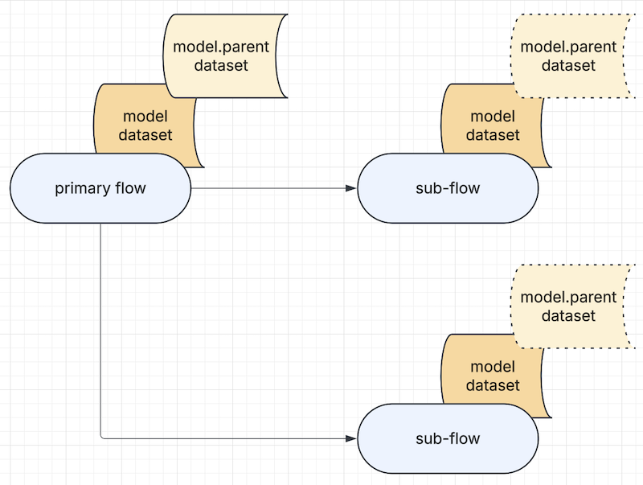
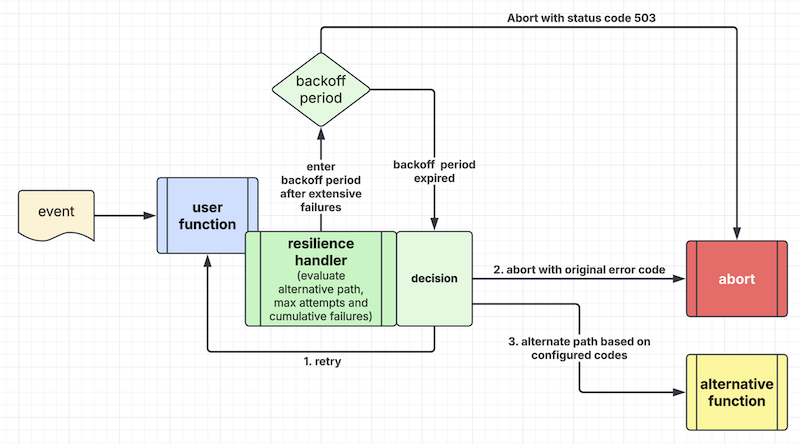

Event Script Syntax
Event Script is a Domain Specific Language (DSL) that uses YAML to represent an end-to-end transaction flow. A transaction is a business use case, and the flow can be an API service, a batch job or a real-time transaction.
Flow list
This configuration file sits in the project "resources" project and contains a list of filenames.
The default flow list is "flows.yaml" under the "resources" folder. It may look like this.
flows:
- 'get-profile.yml'
- 'create-profile.yml'
- 'delete-profile.yml'
location: 'classpath:/flows/'
The "location" parameter is optional. If present, you can tell the system to load the flow config files from another folder location.
Multiple flow lists
You can provide more than one flow list to your application and it can become very handy under different situations. For instance, to achieve better modularity in complex application, flows can be grouped to multiple categories based on development team's choice and these flows can be managed in multiple flow lists. Another great place to use multiple flow list is to include external libraries which contain pre-defined flow lists. The following example demonstrates that an application loads a list of flows defined in "flows.yaml" and additional flows defined in "more-flows.yaml" file of a composable library.
yaml.flow.automation=classpath:/flows.yaml, classpath:/more-flows.yaml
Writing new REST endpoint and function
You can use the "composable-example" subproject as a template to write your own composable application.
Before you update the code, please clean the project using npm run clean. This will remove the scanned
list of composable functions in the ComposableLoader (preload.ts) class so that you can write your own
functions.
For each filename in the flows.yml, you should create a corresponding configuration file under the "resources/flows" folder.
Let's write a new flow called "greetings". You can copy-n-paste the following into a file called "greetings.yml" under the "resources/flows" folder.
flow:
id: 'greetings'
description: 'Simplest flow'
ttl: 10s
first.task: 'greeting.demo'
tasks:
- input:
- 'input.path_parameter.user -> user'
process: 'greeting.demo'
output:
- 'text(application/json) -> output.header.content-type'
- 'result -> output.body'
description: 'Hello World'
execution: end
In the application.properties, you can specify the following parameter:
yaml.flow.automation=classpath:/flows.yaml
and update the "flows.yaml" file in the resources folder as follows:
flows:
- 'get-profile.yml'
- 'create-profile.yml'
- 'delete-profile.yml'
- 'greetings.yml'
Then, you can add a new REST endpoint in the "rest.yaml" configuration file like this.
- service: "http.flow.adapter"
methods: ['GET']
url: "/api/greetings/{user}"
flow: 'greetings'
timeout: 10s
cors: cors_1
headers: header_1
The above REST endpoint takes the path parameter "user". The task executor will map the path parameter to the input arguments (headers and body) in your function. Now you can write your new function with the named route "greeting.demo". Please copy-n-paste the following into a TypeScript class called "greetings.ts" and save it under the "tasks" folder in the source project.
import { AppException, Composable, EventEnvelope, preload } from "mercury-composable";
export class Greetings implements Composable {
@preload('greeting.demo', 10)
initialize(): Composable {
return this;
}
async handleEvent(evt: EventEnvelope) {
const input = evt.getBody() as object;
if ('user' in input) {
const result = {};
result['time'] = new Date().toISOString();
result['message'] = 'Welcome';
result['user'] = input['user'];
return result;
} else {
throw new AppException(400, "Missing path parameter 'user'")
}
}
}
To test your new REST endpoint, flow configuration and function, please point your browser to
http://127.0.0.1:8086/api/greetings/my_name
You can replace "my_name" with your first name to see the response to the browser.
Flow configuration syntax
In your "greetings.yml" file above, you find the following key-values:
flow.id - Each flow must have a unique flow ID. The flow ID is usually originated from a user facing endpoint
through an event adapter. For example, you may write an adapter to listen to a cloud event in a serverless deployment.
In The most common one is the HTTP adapter.
The flow ID is originated from the "rest.yaml". The flow-engine will find the corresponding flow configuration
and create a new flow instance to process the user request.
flow.description - this describes the purpose of the flow
flow.ttl - "Time to live (TTL)" timer for each flow. You can define the maximum time for a flow to finish processing.
All events are delivered asynchronously and there is no timeout value for each event. The TTL defines the time budget
for a complete end-to-end flow. Upon expiry, an unfinished flow will be aborted. You can use suffix "s" for seconds,
"m" for minutes and "h" for hours. e.g. "30s" for 30 seconds.
Note: When using the HTTP Flow Adapter, the flow.ttl value can be higher than the REST endpoint's timeout value. This would happen when one of your tasks in the event flow responds to the caller and the event flow continues to execute the rest of the flow. This type of task is called "response" task.
first.task - this points to the route name of a function (aka "task") to which the flow engine will deliver
the incoming event.
The configuration file contains a list of task entries where each task is defined by "input", "process", "output" and "execution" type. In the above example, the execution type is "end", meaning that it is the end of a transaction and its result set will be delivered to the user.
Underlying Event System
The Event Script system uses platform-core as the event system where it encapsulates EventEmitter from the standard library of Node.js.
The integration points are intentionally minimalist. For most use cases, the user application does not need to make any API calls to the underlying event system.
REST automation and HTTP flow adapter
The most common transaction entry point is a REST endpoint. The event flow may look like this:
REQUEST -> "http.request" -> "task.executor" -> user defined tasks
-> "async.http.response" -> RESPONSE
REST automation is part of the platform-core library. It contains a non-blocking HTTP server that converts HTTP requests and responses into events.
It routes an HTTP request event to the HTTP adapter if the "flow" tag is provided.
In the following example, the REST endpoint definition is declared in a "rest.yaml" configuration. It will route the URI "/api/decision" to the HTTP flow adapter that exposes its service route name as "http.flow.adapter".
rest:
- service: "http.flow.adapter"
methods: ['GET']
url: "/api/decision?decision=_"
flow: 'decision-test'
timeout: 10s
cors: cors_1
headers: header_1
tracing: true
The "cors" and "headers" sections are optional. When specified, the REST endpoint will insert CORS headers and HTTP request headers accordingly.
For REST automation syntax, please refer to Chapter 3
The HTTP flow adapter maps the HTTP request dataset and the flow ID into a standard event envelope for delivery to the flow engine.
The HTTP request dataset, addressable with the "input." namespace, contains the following:
| Key | Values |
|---|---|
| method | HTTP method |
| uri | URI path |
| header | HTTP headers |
| cookie | HTTP cookies |
| path_parameter | Path parameters if any |
| query | HTTP query parameters if any |
| body | HTTP request body if any |
| stream | input stream route ID if any |
| ip | remote IP address |
| filename | filename if request is a multipart file upload |
| session | authenticated session key-values if any |
For easy matching, please use lower case for headers, cookies, query and path parameters.
Regular API uses JSON that will be converted to an object of key-values in the event's body.
Task and its corresponding function
Each task in a flow must have a corresponding function. You can assign a task name to the function using the
preload annotation like this.
@preload('greeting.demo', 10)
initialize(): Composable {
return this;
}
The "route" in the preload annotation is the task name. The concurrency number define the maximum number of
"workers" that the function can handle concurrently. The system is designed to be reactive and the function does
not consume memory and CPU resources until an event arrives.
Unique task naming
Composable functions are designed to be reusable. By changing some input data mapping to feed different parameters and payload, your function can behave differently.
Therefore, it is quite common to use the same function (i.e. the process parameter) more than once in a single
event flow.
When a task is not named, the "process" parameter is used to name the task.
Since each task must have a unique name for event routing, we cannot use the same "process" name more than once in
an event flow. To handle this use case, you can create unique names for the same function using the name parameter
like this:
flow:
id: 'greetings'
description: 'Simplest flow'
ttl: 10s
first.task: 'my.first.task'
tasks:
- name: 'my.first.task'
input:
- 'input.path_parameter.user -> user'
process: 'greeting.demo'
output:
- 'text(application/json) -> output.header.content-type'
- 'result -> output.body'
description: 'Hello World'
execution: sequential
next:
- 'another.task'
The above event flow configuration uses "my.first.task" as a named route for "greeting.demo" by adding the "name" parameter to the composable function.
Note: The Event Manager performs event choreography using the unique task name. Therefore, when the "process" name for the function is not unique, you must create unique task "names" for the same function to ensure correct routing.
Hierarchy of flows
As shown in Figure 1, you can run one or more sub-flows inside a primary flow.

Figure 1 - Hierarchy of flows
To do this, you can use the flow protocol identifier (flow://) to indicate that the task is a flow.
Note that the syntax for input and output data mapping for subflow is the same as a regular task.
tasks:
- input:
- 'input.path_parameter.user -> header.user'
- 'input.body -> *'
process: 'flow://my-sub-flow'
output:
- 'result -> model.json'
description: 'Execute a sub-flow'
execution: sequential
next:
- 'my.next.function'
If the sub-flow is not available, the system will throw an error stating that it is not found.
Hierarchy of flows would reduce the complexity of a single flow configuration file. The "time-to-live (TTL)" value of the parent flow should be set to a value that covers the complete flow including the time used in the sub-flows.
In the input/output data mapping sections, the configuration management system provides a parent
state machine using the namespace model.parent. to be shared by the primary flow and all sub-flows that
are instantiated from it.
Just like a task, a subflow has "input" and "output". You can map data to the "input" of a subflow using the namespaces "body" and "header" where they are maps of key-values. Inside a task of the subflow, the body and header namespaces can be accessed for their key-values like this:
- input:
- 'input.header.user -> header.user'
- 'input.body -> *'
process: 'first.task.in.subflow'
output:
- 'result -> model.parent.subflow_result'
description: 'Execute a task in a subflow'
execution: end
Since the parent flow and subflows has a shared state machine, passing "body" and "header" key-values to the "input" of a subflow is optional. You can pass key-values between the parent and subflows using the shared state machine easily.
Note: The namespace
model.root.is an alias ofmodel.parent.This would reduce ambiguity if you prefer to use "root" referring to the parent flow that creates one or more subflows.
Tasks and data mapping
All tasks for a flow are defined in the "tasks" section.
Input/Output data mapping
A function is self-contained. This modularity reduces application complexity because the developer only needs interface contract details for a specific function.
To handle this level of modularity, the system provides configurable input/output data mapping.
Namespaces for I/O data mapping
| Type | Keyword and/or namespace | LHS / RHS | Mappings |
|---|---|---|---|
| Flow input dataset | input. |
left | input |
| Flow output dataset | output. |
right | output |
| Function input body | no namespace required | right | input |
| Function input or output headers | header or header. |
both | I/O |
| Function output result set | result. |
left | output |
| Function output status code | status |
left | output |
| Decision value | decision |
right | output |
| State machine dataset | model. |
both | I/O |
| Parent state machine dataset | model.parent. |
both | I/O |
| External state machine key-value | ext: |
right | I/O |
For state machine (model and model.parent namespaces), the system prohibits access to the whole namespace. You should only access specific key-values in the model or model.parent namespaces.
The namespace model.parent. is shared by the primary flow and all sub-flows that are instantiated from it.
The external state machine namespace uses the namespace ext: to indicate that the key-value is external.
Constants for input data mapping
| Type | Keyword for the left-hand-side argument |
|---|---|
| String | text(example_value) |
| Integer | int(number) |
| Long | long(number) |
| Float | float(number) |
| Double | double(number) |
| Boolean | boolean(true or false) |
| Map | map(k1=v1, k2=v2)map(base.config.parameter) |
| File | file(text:file_path) |
| File | file(binary:file_path) |
| File | file(json:file_path) |
| Classpath | classpath(text:file_path) |
| Classpath | classpath(binary:file_path) |
| Classpath | classpath(json:file_path) |
For input data mapping, the "file" constant type is used to load some file content as an argument of a user function. You can tell the system to render the file as "text", "binary" or "json". Similarly, the "classpath" constant type refers to static file in the application source code's "resources" folder. When file type mapping is "json", the file content will be rendered as a Map or a List from a JSON string.
The "map" constant type is used for two purposes:
1. Map of key-values
The following example illustrates creation of a map of key-values. In the first entry, a map of 2 key-values is set as the input argument "myMap" of a user function. In the second entry, the map's values are retrieved from the key "some.key" in base configuration and the environment variable "ENV_VAR_ONE".
'map(k1=v1, k2=v2) -> myMap'
'map(k1=${some.key}, k2=${ENV_VAR_ONE}) -> myMap'
Note: The comma character is used as a separator for each key-value pair. If the value contains a comma, the system cannot parse the key-values correctly. In this case, please use the 2nd method below.
2. Mapping values from application.yml
The following input data mapping sets the value of "my.key" from the application.yml base configuration file to the input argument "myKey" of a user function.
'map(my.key) -> myKey'
The "map(my.key)" would set a primitive value (text, integer, float, boolean), a JSON object of key-values or an array of values.
Special content type for output data mapping
| Type | Keyword for the right-hand-side argument |
|---|---|
| File | file(file_path) |
| File | file(append:file_path) |
For output data mapping, the "file" content type is used to save some data from the output of a user function to a file in the local file system. If the left-hand-side (LHS) resolved value is null, the file in the RHS will be deleted. This allows you to clean up temporary files before your flow finishes.
An optional prefix "append" may be used to tell the system to append file content instead of overwriting it.
Decision value
The "decision" keyword applies to "right hand side" of output data mapping statement in a decision task only (See "Decision" in the task section).
Each flow has its own input and output
Each function has its input headers, input body and output result set. Optionally, a function can return an EventEnvelope object to hold its result set in the "body", a "status" code and one or more header key-values.
Since each function is stateless, a state machine (with namespace model.) is available as a temporary memory store
for transaction states that can be passed from one task to another.
All variables are addressable using the standard dot-bracket convention.
For example, "hello.world" will retrieve the value 100 from this data structure:
{
"hello": {
"world": 100
}
}
and "numbers[1]" will retrieve the value 200 below:
{ "numbers": [100, 200] }
The assignment is done using the assignment (->) syntax.
In the following example, the HTTP input query parameter 'amount' is passed as input body argument 'amount' to the task 'simple.decision'. The result (function "return value") from the task will be mapped to the special "decision" variable that the flow engine will evaluate. This assumes the result is a boolean or numeric value.
The "decision" value is also saved to the state machine (model) for subsequent tasks to evaluate.
- input:
- 'input.query.amount -> amount'
process: 'simple.decision'
output:
- 'result -> decision'
- 'result -> model.decision'
Environment variables
You can use the standard ${ENV_VAR:default} syntax to resolve environment variables or parameters from
the application.properties.
Runtime model variables
To use a runtime model variable value as a key or constant, you can use the {model.variable_name} syntax.
For example,
- input:
- 'text(wonderful day) -> model.world'
- 'text(world) -> model.pointer'
- 'model.{model.pointer} -> value1'
- 'text(new {model.pointer}) -> value2'
- 'text(keep {this}/{one} unchanged) -> value3'
process: 'demo.function'
model.{model.pointer} is resolved as model.world, giving value1 = wonderful day and
value2 = new world.
The text inside a set of brackets that is not a model variable will be kept unchanged,
thus value3 = keep {this}/{one} unchanged
The use of string substitution is subject to event script syntax validation. Therefore,
- When this feature is used in the left-hand-side of an input data mapping, it can be used to substitute a constant
or a segment of a key in the
input.andmodel.namespaces. The above example shows the use of the model namespace inmodel.{model.pointer} -> value1. - Similarly, when used in the left-hand-side of an output data mapping, it can be used to substitute a constant
or a segment of a key in the
input.,model.,header.orresult.namespaces. - When used in the right-hand-side of an input data mapping, namespace is optional because it may map as an argument to a task.
- When used in the right-hand-side of an output data mapping, it can be used to substitute a
model.namespace,file(output, flowoutput.namespace or an external state machineext:namespace.
Important:
- For security reason, the key inside the brackets must be a model variable.
- The resolved value from a model variable must be either text or number. Otherwise, it will be converted to a value of "null".
- For simplicity, nested substitution is not allowed.
i.e.
model.{model.{model.n}}ormodel.{model.list[model.n]}will be rejected. - If the bracketed text is not a model variable, the brackets and the enclosed text will be kept unchanged.
Handling arrays in a dataset
An array of data elements is expressed as a list.
{ "numbers": [100, 200] }
As discussed earlier, an array element can be retrieved using a number as index. For example, to take the second element with value 200 above, you can use this data mapping like this:
'input.body.numbers[1] -> second_number'
In the above example, it is an "input data mapping". It maps the second element of value 200 as the input argument "second_number" to a composable function.
For-loop feature is supported in pipeline in an event flow. It would be convenient to use the iterator value as an index to map an input argument. We can do something like this:
'input.body.numbers[model.n] -> second_number'
where model.n is the iterator value in a for-loop.
Similarly, it is possible to do output data mapping. For example,
'result.computed -> model.list[model.n]'
To address an array element, we can use a number or a "dynamic model variable" as an index. The model variable must resolved to a number.
Note: There are some consideration when using a dynamic model variable as an index. The left-hand-side of a data mapping is a GET operation. The right-hand-side is a SET operation. If the model variable is non-numeric, the GET operation will return null and SET operation will throw exception. To avoid setting an arbitrary high index, the size of the index is limited by the parameter "max.model.array.size" in application.yml
Append an element to an array
An empty array index in the right hand side tells the system to append an element to an array. For example, the value resolved from the left hand side "result.item1" and "result.item2" will be appended to the model.items array in the state machine.
- 'result.item1 -> model.items[]'
- 'result.item2 -> model.items[]'
If model.items does not exist, the first element will be set as array index "0". Therefore, the above output data mapping statements are the same as:
- 'result.item1 -> model.items[0]'
- 'result.item2 -> model.items[1]'
Simple type matching and conversion
Event script's state machine supports simple type matching and conversion for the model namespace.
This "impedance matching" feature allows us to accommodate minor interface contract changes without refactoring business logic of a user function.
This is supported in both the left-hand-side and right-hand-side of both input and output data mappings.
For the left-hand-side, the state machine's model value is matched or converted to the target data type before setting the value of the right-hand-side. The state machine values are unchanged.
For the right-hand-side, the matched or converted value is applied to the state machine's model value.
The syntax is model.somekey:type where "type" is one of the following:
| Type | Match value as | Example |
|---|---|---|
| text | text string | model.someKey:text |
| binary | byte array | model.someKey:binary |
| int | integer or -1 if not numeric | model.someKey:int |
| long | long or -1 if not numeric | model.someKey:long |
| float | float or -1 if not numeric | model.someKey:float |
| double | double or -1 if not numeric | model.someKey:double |
| boolean | true or false | model.someKey:boolean |
| boolean(value) | true if value matches | model.someKey:boolean(positive) |
| boolean(value=true) | true if value matches | model.someKey:boolean(positive=true) |
| boolean(value=false) | false if value matches | model.someKey:boolean(negative=false) |
| and(model.key) | boolean AND of 2 model keys | model.someKey:and(model.another) |
| or(model.key) | boolean OR of 2 model keys | model.someKey:or(model.another) |
| !model.key | negate of a model variable | !model.someKey |
| substring(start, end) | extract a substring | model.someKey:substring(0, 5) |
| substring(start) | extract a substring | model.someKey:substring(5) |
| concat(vars...) | concat model variables & text | model.a:concat(model.b, text(!)) |
| b64 | byte-array to Base64 text | model.someKey:b64 |
| b64 | Base64 text to byte-array | model.someKey:b64 |
| uuid | generated UUID-4 value | model.unique_id:uuid |
| length | length of model list variable | model.someList:length |
For Base64 type matching, it handles two symmetrical use cases. If the key-value is a text string, the system would assume it is a Base64 text string and convert it to a byte-array. If the key-value is a byte-array, the system will encode it into a Base64 text string.
For uuid type matching, the system will ignore the value of the model variable in the left hand side because UUID is a generated value. When using it in the right hand side, the model variable will be updated with a generated UUID value accordingly.
For simplicity of syntax, each type matching command is a single operation. For more complex operation such as multiple AND, OR and NEGATE operators, you can configure multiple steps of operation.
For string concatenation, you may concat a model variable with one or more model variables and text constants. A more convenient alternative to string concatenation is the use of "runtime model variables". You can replace the "concat" method with "runtime model variable" method as follows:
# assuming the bearer token value is in model.token
- 'text(Bearer ) -> model.bearer'
- 'model.bearer:concat(model.token) -> authorization'
# the above is the same as
- 'text(Bearer {model.token}) -> authorization'
An interesting use case is a simple decision task using the built-in no-op function. For boolean with value matching, you can test if the key-value in the left-hand-side is a null value. For example, when a control file for the application is not available, your application will switch to run in dev mode.
A sample task may look like this:
first.task: 'no.op'
tasks:
- input:
- 'file(binary:/tmp/interesting-config-file) -> model.is-local:boolean(null=true)'
process: 'no.op'
output:
- 'model.is-local -> decision'
execution: decision
next:
- 'start.in.dev.mode'
- 'start.in.cloud'
Another use case is type conversion for HTTP path parameter which is always a text string. If your composable function requires a path parameter to be accepted as an integer, you can do this:
- input:
- 'input.path_parameter.userid -> model.userid:int'
- 'model.userid -> userid'
The above input data mapping example illustrates the use of a model variable to convert a text parameter into an integer. Note that if the path parameter is not numeric, the converted value will be -1.
Note: The system only supports "type matching modifier" in the model namespace because of the design principle of data immutability. The model is a state machine for a flow instance. As a temporary store, we can use it for this purpose without side effect that the user application would accidentally modify a value of the flow's input.
Convenient data mapping using model variable
To address the common use case of using a model variable as an intermediate value, the system supports the following formats for input data mapping and output data mapping.
// 2-part data mapping format
LHS -> RHS
// 3-part data mapping format
LHS -> model.variable -> RHS
For the 2-part data mapping format, there are left-hand-side and right-hand-side where the value retrieved from the left-hand-side variable is mapped to the right-hand-side.
The 3-part data mapping allows us to use a model variable as an intermediate for simple type matching.
In the previous example, it uses two entries to convert a HTTP path parameter from a text string to a number and set the number as input argument. The configuration syntax can be simplified as follows:
- input:
- 'input.path_parameter.userid -> model.userid:int -> userid'
The above 3-part data mapping entry will be expanded into two entries internally. This extra processing is done at the "CompileFlows" step and thus there is no impact to the task execution speed.
Please note that the 3-part data mapping format is not supported when the left-hand-side is a text constant.
It is because a text constant may contain any special characters including the mapping signature ->.
Metadata for each flow instance
For each flow instance, the state machine in the "model" namespace provides the following metadata that you can use in the input/output data mapping. For example, you can set this for an exception handler to log additional information.
| Type | Keyword | Comment |
|---|---|---|
| Flow ID | model.flow |
The ID of the event flow config |
| Trace ID | model.trace |
Optional traceId when tracing is turned on |
| Correlation ID | model.cid |
Correlation ID of the inbound request |
Special handling for header
When function input keyword header is specified in the "right hand side" of an input data mapping statement,
it refers to the input event envelope's headers. Therefore, it assumes the "left hand side" to resolve into
a JSON object of key-values. Otherwise, it will reject the input data mapping statement with an error like this:
Invalid input mapping 'text(ok) -> header', expect: JSON, Actual: string
When function input namespace header. is used, the system will map the value resolved from the "left hand side"
statement into the specific header.
For example, the input data mapping statement text(ok) -> header.demo will set "demo=ok" into the input event
envelope's headers.
When function output keyword header is specified in the "left hand side" of an output data mapping statement,
it will resolve as a JSON object of key-values from the function output event envelope's headers.
Similarly, when function output namespace header. is used, the system will resolve the value from a specific
key of the function output event envelope's headers.
Function input and output
To support flexible input data mapping, the input to a function must be either a JSON object of key-values. However, the output (i.e. result set) of a function can be JSON object or primitive (boolean, string, number, Buffer, etc.).
Your function must implement the Composable interface to configure input and output.
Since a data structure is passed to your function's input argument as key-values, you may create a class to deserialize the data structure.
To tell the system that your function is expecting input as a JSON object, you can use the special notation *
on the right hand side.
For example, the following entry tells the system to set the value in "model.dataset" as a JSON payload.
- input:
- 'model.dataset -> *'
Note: If the value from the left hand side is not a JSON, the system will ignore the input mapping command and print out an error message in the application log.
Setting function input headers
When function input body is used to hold a JSON object, we may use function input headers to pass other arguments to the function without changing the data structure of a user defined JSON object of key-values.
In the following example, the HTTP query parameter "userid" will be mapped to the function input header key "user" and the HTTP request body will be mapped to the function input body.
- input:
- 'input.query.userid -> header.user'
- 'input.body -> *'
process: 'my.user.function'
output:
- 'text(application/json) -> output.header.content-type'
- 'result -> output.body'
Task types
Decision task
A decision task makes decision to select the next task to execute. It has the tag execution=decision.
In the output data mapping section, it must map the corresponding result set or its key-value to the decision object.
The "next" tag contains a list of tasks to be selected based on the decision value.
If decision value is boolean, a true value will select the first task. Otherwise, the second task will be selected.
If decision value is an integer, the number should start from 1 where the corresponding "next" task will be selected.
tasks:
- input:
- 'input.query.decision -> decision'
process: 'simple.decision'
output:
- 'result -> model.decision'
- 'result -> decision'
description: 'Simple decision test'
execution: decision
next:
- 'decision.case.one'
- 'decision.case.two'
Response task
A response task will provide result set as a flow output or "response". A response task allows the flow to respond to the user or caller immediately and then move on to the next task asynchronously. For example, telling the user that it has accepted a request and then moving on to process the request that may take longer time to run.
A response task has the tag execution=response and a "next" task.
tasks:
- input:
- 'input.path_parameter.user -> user'
- 'input.query.seq -> sequence'
process: 'sequential.one'
output:
- 'result -> model.json'
- 'result -> output.body'
description: 'Pass a JSON to another task'
execution: response
next:
- 'sequential.two'
End task
An end task indicates that it is the last task of the transaction processing in a flow. If the flow has not executed a response task, the end task will generate the response. Response is defined by output data mapping.
This task has the tag execution=end.
For example, the greeting task in the unit tests is an end task.
- input:
- 'input.path_parameter.user -> user'
process: 'greeting.demo'
output:
- 'text(application/json) -> output.header.content-type'
- 'result -> output.body'
description: 'Hello World'
execution: end
Sequential task
Upon completion of a sequential task, the next task will be executed.
This task has the tag execution=sequential.
In the following example, sequential.two will be executed after sequential.one.
tasks:
- input:
- 'input.path_parameter.user -> user'
- 'input.query.seq -> sequence'
process: 'sequential.one'
output:
- 'result -> model.json'
description: 'Pass a JSON to another task'
execution: sequential
next:
- 'sequential.two'
Parallel task
Upon completion of a parallel task, all tasks in the "next" task list will be executed in parallel.
This task has the tag execution=parallel.
In this example, parallel.one and parallel.two will run after begin.parallel.test
tasks:
- input:
- 'int(2) -> count'
process: 'begin.parallel.test'
output: []
description: 'Setup counter for two parallel tasks'
execution: parallel
next:
- 'parallel.one'
- 'parallel.two'
Fork-n-join task
Fork-n-join is a parallel processing pattern.
A "fork" task will execute multiple "next" tasks in parallel and then wait for the result sets before running the "join" task.
This task has the tag execution=fork. It must have a list of "next" tasks and a "join" task.
It may look like this:
tasks:
- input:
- 'input.path_parameter.user -> user'
- 'input.query.seq -> sequence'
process: 'sequential.one'
output:
- 'result -> model.json'
description: 'Pass a JSON to another task'
execution: fork
next:
- 'echo.one'
- 'echo.two'
join: 'join.task'
Dynamic fork-n-join task
A special version of the fork-n-join pattern is called dynamic fork-n-join which refers to parallel processing
of multiple instances of the same "next" task for each element in a list.
For example, you have a list of 100 elements in an incoming request and each element would be processed by the same backend service. You want to process the 100 elements in parallel by multiple instances of a service wraper that connects to the backend service.
The use case can be configured like this:
tasks:
- input:
- 'input.elements -> elements'
process: 'data.validation'
output:
- 'result.elements -> model.elements'
description: 'Validate list of elements'
execution: fork
source: 'model.elements'
next:
- 'element.processor'
join: 'join.task'
- name: 'element.processor'
input:
- 'model.elements.ITEM -> item'
- 'model.elements.INDEX -> index'
process: 'v1.element.processor'
output: []
description: 'Hello world'
execution: sink
To handle this special use case, you can add a source parameter in the fork task. The "source" parameter
tells the system which model variable holds the list of elements. You should only configure a single "next"
task. The system will spin up parallel instances of the next task to handle each element from the model
variable containing the list.
In the input data mapping section, there are two special suffixes .ITEM and .INDEX. The system will iterate
the list of elements and spin up an instance of the "next" task to retrieve the element (item) and index of
the element in the list. The two special suffixes are relevant only when adding to the model variable configured
in the "source" parameter.
Important:
- The model variables with special suffixes '.ITEM' and '.INDEX' are virtual objects for the purpose of mapping as input arguments to a task. They cannot be used as regular model variables.
- Dynamic fork-n-join is designed to execute the same task for a list of elements in parallel. It does not support subflow. i.e. the "process" tag of the "next" task cannot be a subflow.
Sink task
A sink task is a task without any next tasks. Sink tasks are used by fork-n-join and pipeline tasks as reusable modules.
This task has the tag execution=sink.
- input:
- 'text(hello-world-two) -> key2'
process: 'echo.two'
output:
- 'result.key2 -> model.key2'
description: 'Hello world'
execution: sink
Pipeline feature
Pipeline is an advanced feature of Event Script.
Pipeline task
A pipeline is a list of tasks that will be executed orderly within the current task.
When the pipeline is done, the system will execute the "next" task.
This task has the tag execution=pipeline.
tasks:
- input:
- 'input.path_parameter.user -> user'
- 'input.query.seq -> sequence'
process: 'sequential.one'
output:
- 'result -> model.json'
description: 'Pass a JSON to another task'
execution: pipeline
pipeline:
- 'echo.one'
- 'echo.two'
next:
- 'echo.three'
Some special uses of pipelines include "for/while-loop" and "continue/break" features.
Simple for-loop
In the following example, the loop.statement contains a for-loop that uses a variable in the state machine to
evaluate the loop.
In this example, the pipeline will be executed three times before passing control to the "next" task.
tasks:
- input:
- 'input.path_parameter.user -> user'
- 'input.query.seq -> sequence'
process: 'sequential.one'
output:
- 'result -> model.json'
description: 'Pass a JSON to another task'
execution: pipeline
loop:
statement: 'for (model.n = 0; model.n < 3; model.n++)'
pipeline:
- 'echo.one'
- 'echo.two'
- 'echo.three'
next:
- 'echo.four'
Simple while loop
The loop.statement may use a "while loop" syntax like this:
loop:
statement: 'while (model.running)'
To exit the above while loop, one of the functions in the pipeline should return a boolean "false" value with
output "data mapping" to the model.running variable.
For loop with break/continue decision
In the following example, the system will evaluate if the model.quit variable is true.
If yes, the break or continue condition will be executed.
The state variable is obtained after output data mapping and any task in the pipeline can set a key-value for mapping into the state variable.
tasks:
- input:
- 'input.path_parameter.user -> user'
- 'input.query.seq -> sequence'
process: 'sequential.one'
output:
- 'result -> model.json'
description: 'Pass a JSON to another task'
execution: pipeline
loop:
statement: 'for (model.n = 0; model.n < 3; model.n++)'
condition: 'if (model.quit) break'
pipeline:
- 'echo.one'
- 'echo.two'
- 'echo.three'
next:
- 'echo.four'
Note that the "condition" parameter can be a single condition or a list of conditions. In the following example, the system will evaluate both the model.quit and model.jump values.
loop:
statement: 'for (model.n = 0; model.n < 3; model.n++)'
condition:
- 'if (model.quit) break'
- 'if (model.jump) break'
Handling exception
You can define exception handler at the top level or at the task level.
Exception is said to occur when a user function throws exception or returns an EventEnvelope object with a status code equals to or larger than 400.
The event status uses the same numbering scheme as HTTP exception status code. Therefore, status code less than 400 is not considered an exception.
Top-level exception handler
Top-level exception handler is a "catch-all" handler. You can define it like this:
flow:
id: 'greetings'
description: 'Simplest flow of one task'
ttl: 10s
exception: 'v1.my.exception.handler'
In this example, the v1.my.exception.handler should point to a corresponding exception handler that you provide.
The following input arguments will be delivered to your function when exception happens.
| Key | Description |
|---|---|
| status | Exception status code |
| message | Error message |
| stack | Stack trace in a text string |
The exception handler function can be an "end" task to abort the transaction or a decision task to take care of the exception. For example, the exception handler can be a "circuit-breaker" to retry a request.
Note: for efficiency, stack trace transport is limited to the first 10 lines.
Task-level exception handler
You can attach an exception handler to a task. One typical use is the "circuit breaker" pattern. In the following example, the user function "breakable.function" may throw an exception for some error condition. The exception will be caught by the "v1.circuit.breaker" function.
- input:
- 'input.path_parameter.accept -> accept'
- 'model.attempt -> attempt'
process: 'breakable.function'
output:
- 'int(0) -> model.attempt'
- 'text(application/json) -> output.header.content-type'
- 'result -> output.body'
description: 'This demo function will break until the "accept" number is reached'
execution: end
exception: 'v1.circuit.breaker'
The configuration for the circuit breaker function may look like this:
- input:
- 'model.attempt -> attempt'
- 'int(2) -> max_attempts'
- 'error.code -> status'
- 'error.message -> message'
- 'error.stack -> stack'
process: 'v1.circuit.breaker'
output:
- 'result.attempt -> model.attempt'
- 'result.decision -> decision'
- 'result.status -> model.status'
- 'result.message -> model.message'
description: 'Just a demo circuit breaker'
execution: decision
next:
- 'breakable.function'
- 'abort.request'
An exception handler will be provided with the "error" object that contains error code, error message and a stack trace. The exception handler can inspect the error object to make decision of the next step.
For circuit breaker, we can keep the number of retry attempts in the state machine under "model.attempt" or any key name that you prefer. In the above example, it sets an integer constant of 2 for the maximum attempts.
The circuit breaker can then evaluate if the number of attempts is less than the maximum attempts. If yes, it will return a decision of "true" value to tell the system to route to the "breakable.function" again. Otherwise, it will return a decision of "false" value to abort the request.
A more sophisticated circuit breaker may be configured with "alternative execution paths" depending on the error status and stack trace. In this case, the decision value can be a number from 1 to n that corresponds to the "next" task list.
Exception handlers may be used in both queries and transactions. For a complex transaction, the exception handler may implement database rollback logic or recovery mechanism.
Best practice
When a task-level exception handler throws exception, it will be caught by the top-level exception handler, if any.
A top-level exception handler should not throw exception. Otherwise it may go into an exception loop.
Therefore, we recommend that an exception handler should return regular result set in a JSON object.
An example of task-level exception handler is shown in the "hello-exception.ts" class in the "task" folder where it set the status code in the result set so that the system can map the status code from the result set to the next task or to the HTTP output status code.
Advanced features
No-operation function
A convenient no-operation function with the route name no.op is available. It can be used when you want
to perform some input/output data mapping without executing any business logic.
Generic resilience handler function
Another useful built-in function is a resilience handler with the route name resilience.handler.
It is a generic resilience handler. It will retry, abort, use an alternative path or exercise a brief backoff.

Figure 2 - Resilience Handler
The following parameters (input data mapping) define behavior for the handler:
max_attempts- when the handler has used all the attempts, it will abort.attempt- this tells the handler how many attempts it has triedstatus- you should map the error status code in this fieldmessage- you should map the error message in this fieldalternative- the optional codes and range of status codes to tell the handler to reroutedelay- the delay in milliseconds before exercising retry or reroute. Minimum value is 10 ms. Delay is skipped for the first retry. This slight delay is a protection mechanism.
Optional backoff behavior:
cumulative- the total number of failures since last success or backoff reset if anybackoff- the time of a backoff period (epoch milliseconds) if anybackoff_trigger- the total number of failures that triggers a backoffbackoff_seconds- the time to backoff after an abort has occurred. During this period, It will abort without updating attempt. This avoids overwhelming the target service that may result in recovery storm.
Return value (output data mapping):
result.attempt- the handler will clear or increment this counterresult.cumulative- the handler will clear or increment this counter. Not set if "backoff_trigger" is not given in input.result.decision- 1, 2 or 3 where 1=retry, 2=abort, 3=reroute that corresponds to the next tasksresult.status- the status code that the handler aborts the retry or reroute. Not set if retry or reroute.result.message- the reason that the handler aborts the retry or reroute. Not set if retry or reroute.result.backoff- the time of a backoff period (epoch milliseconds). Not set if not in backoff mode.
Note: "result.attempt" should be saved in the state machine with the "model." namespace. "result.cumulative" and "result.backoff" should be saved in the temporary file system or an external state machine.
For more details, please refer to the event script resilience-demo.yml in the test resources folder
and the unit test will handle backoff, retry and abort in resilience handler
under the flow.test.ts class.
Extract of the task configuration for the resilience handler is shown as follows. In the following example, "my.task" is the function that is configured with the 'resilience.handler' as an exception handler. The input data mapping tells the handler to enter into "backoff" period when the cumulative failure count reaches the "backoff_trigger" threshold of 3. After that, all requests will be aborted until the backoff period expires.
- input:
- 'error.code -> status'
- 'error.message -> message'
- 'model.attempt -> attempt'
- 'int(10) -> max_attempts'
- 'text(401, 403-404) -> alternative'
- 'file(text:/tmp/resilience/cumulative) -> cumulative'
- 'file(text:/tmp/resilience/backoff) -> backoff'
- 'int(3) -> backoff_trigger'
- 'int(2) -> backoff_seconds'
- 'int(500) -> delay'
process: 'resilience.handler'
output:
- 'result.status -> model.status'
- 'result.message -> model.message'
- 'result.attempt -> model.attempt'
- 'result.decision -> decision'
- 'result.backoff -> file(/tmp/resilience/backoff)'
- 'result.cumulative -> file(/tmp/resilience/cumulative)'
description: 'Resilience handler with alternative path and backoff features'
execution: decision
next:
- 'my.task'
- 'abort.request'
- 'alternative.task'
Note: When the "backoff" feature is enabled, you should configure the resilience handler as a gatekeeper to protect your user function. This allows the system to abort requests during the backoff period.
You may also use this resilience handler as a starting point to write your own exception handler for more complex recovery use cases.
External state machine
The in-memory state machine is created for each query or transaction flow and it is temporal.
For complex transactions or long running work flows, you would typically want to externalize some transaction states to a persistent store such as a distributed cache system or a high performance key-value data store.
In these use cases, you can implement an external state machine function and configure it in a flow.
Below is an example from a unit test. When you externalize a key-value to an external state machine, you must configure the route name (aka level-3 functional topic) of the external state machine.
Note: Passing a
nullvalue to a key of an external state machine means "removal".
external.state.machine: 'v1.ext.state.machine'
tasks:
- input:
# A function can call an external state machine using input or output mapping.
# In this example, it calls external state machine from input data mapping.
- 'input.path_parameter.user -> ext:/${app.id}/user'
- 'input.body -> model.body'
# demonstrate saving constant to state machine and remove it using model.none
- 'text(world) -> ext:hello'
- 'model.none -> ext:hello'
process: 'no.op'
output:
- 'text(application/json) -> output.header.content-type'
# It calls external state machine again from output data mapping
- 'input.body -> ext:/${app.id}/body'
- 'input.body -> output.body'
- 'text(message) -> ext:test'
- 'model.none -> ext:test'
description: 'Hello World'
execution: end
The "external.state.machine" parameter is optional.
When present, the system will send a key-value from the current flow instance's state machine to the function implementing the external state machine. The system uses the "ext:" namespace to externalize a state machine's key-value.
Note: The delivery of key-values to the external state machine is asynchronous. Therefore, please assume eventual consistency.
You should implement a user function as the external state machine.
The input interface contract to the external state machine for saving a key-value is:
header.type = 'put'
header.key = key
body.data = value
Your function should save the input key-value to a persistent store.
In another flow that requires the key-value, you can add an initial task to retrieve from the persistent store and do "output data mapping" to save to the in-memory state machine so that your transaction flow can use the persisted key-values to continue processing.
In the unit tests of the event-script-engine subproject, these two flows work together:
externalize-put-key-value
externalize-get-key-value
IMPORTANT: Events to an external state machine are delivered asynchronously. If you want to guarantee message sequencing, please do not set the "instances" parameter in the
preLoadannotation.
To illustrate a minimalist implementation, below is an example of an external state machine in the event-script-engine's unit test section.
class ExtStateMachine implements Composable {
initialize(): Composable {
return this;
}
async handleEvent(evt: EventEnvelope) {
if (!evt.getHeader(KEY)) {
throw new Error("Missing key in headers");
}
const type = evt.getHeader(TYPE);
const key = evt.getHeader(KEY);
const input = evt.getBody();
if (PUT == type && input instanceof Object && 'data' in input) {
var data = input['data'];
if (data) {
log.info(`Saving ${key} to store`);
store[key] = data;
return true;
}
}
if (GET == type) {
const v = store[key];
if (v) {
log.info(`Retrieve ${key} from store`);
return v;
} else {
return null;
}
}
if (REMOVE == type) {
if (key in store) {
delete store[key];
log.info(`Removed ${key} from store`);
return true;
} else {
return false;
}
}
return false;
}
}
For more sophisticated operation, you may also configure the external state machine as a "flow" like this:
external.state.machine: 'flow://ext-state-machine'
You can then define the flow for "ext-state-machine" like this:
flow:
id: 'ext-state-machine'
description: 'Flow to execute an external state machine'
ttl: 10s
first.task: 'v1.ext.state.machine'
tasks:
- input:
- 'input.header.key -> header.key'
- 'input.header.type -> header.type'
- 'input.body.data -> data'
process: 'v1.ext.state.machine'
output: []
description: 'Execute external state machine'
execution: end
Note: By definition, external state machine flow is outside the scope of the calling flow.
Future task scheduling
You may add a “delay” tag in a task so that it will be executed later. This feature is usually used for unit tests or "future task scheduling".
Since the system is event-driven and non-blocking, the delay is simulated by event scheduling. It does not block the processing flow.
| Type | Value | Example |
|---|---|---|
| Fixed delay | Milliseconds | delay: '1000 ms' |
| Variable delay | State machine variable | delay: model.delay |
Note that the "ms" suffix is optional for documentation purpose. It denotes milliseconds if present.
When delay is set to a state variable that its value is not configured by a prior data mapping, the delay command will be ignored.
An example task that has an artificial delay of 2 seconds:
tasks:
- input:
- 'input.path_parameter.user -> user'
- 'input.query.ex -> exception'
- 'text(hello world) -> greeting'
process: 'greeting.test'
output:
- 'text(application/json) -> output.header.content-type'
- 'result -> output.body'
description: 'Hello World'
execution: end
delay: '2000 ms'
Using Worker Threads
In some use cases, there is a need to use legacy libraries and open sources that we cannot refactor into composable functions.
We have provided a worked example to encapsulate any legacy library running in a worker thread to behave as a composable function. This allows you to accelerate integration with existing enterprise software assets for production use so that you can gradually and orderly refactor them into composable functions.
Please review the composable-worker.ts source file to examine how it encapsulates a worker thread: Composable example repository
The composable-worker.ts class may be used as a template: ComposableWorker
An extract of the source code is shown below.
export class ComposableWorker implements Composable {
@preload('composable.worker.demo', 5, true, true)
initialize(): Composable {
return this;
}
async handleEvent(evt: EventEnvelope) {
// deferred startup until triggered by autostart or your own setup task
if (!loaded && 'start' == evt.getHeader('type')) {
workerBridge();
}
if (worker) {
// sending the original event to the worker to preserve metadata for tracing and correlation
sendEventToWorker(evt);
}
return null;
}
}
The workerBridge will start a new worker thread and the sendEventToWorker method will forward
an incoming event to the worker thread.
After processing the request, the worker thread would send acknowledgement or response back to the main thread in the composable function that will forward it to the caller accordingly.
In the ComposableWorker sample code, it also illustrates the technique to pass environment variables, application runtime arguments and the Composable configuration system from the main thread in your Composable application to the legacy code in the worker thread.
A demo endpoint "GET /api/worker/demo" or "POST /api/worker/demo" is available to demonstrate the ComposableWorker example. Using using the POST method, please set content-type to 'application/json' and provide HTTP request payload as a JSON string.
Please use the worked example as a template to write your own composable function to encapsulate some legacy code or open sources that you have no direct control.
| Chapter-3 | Home | Chapter-5 |
|---|---|---|
| REST Automation | Table of Contents | Build, Test and Deploy |